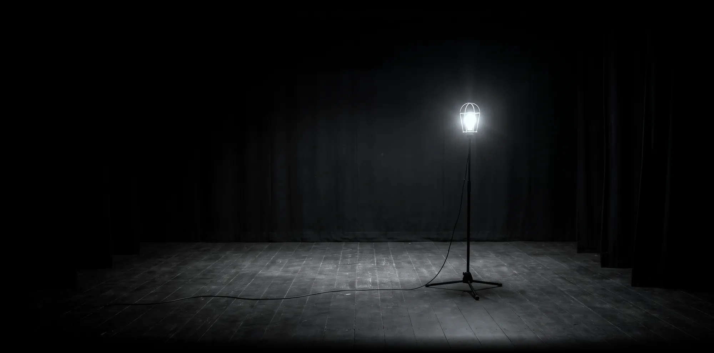
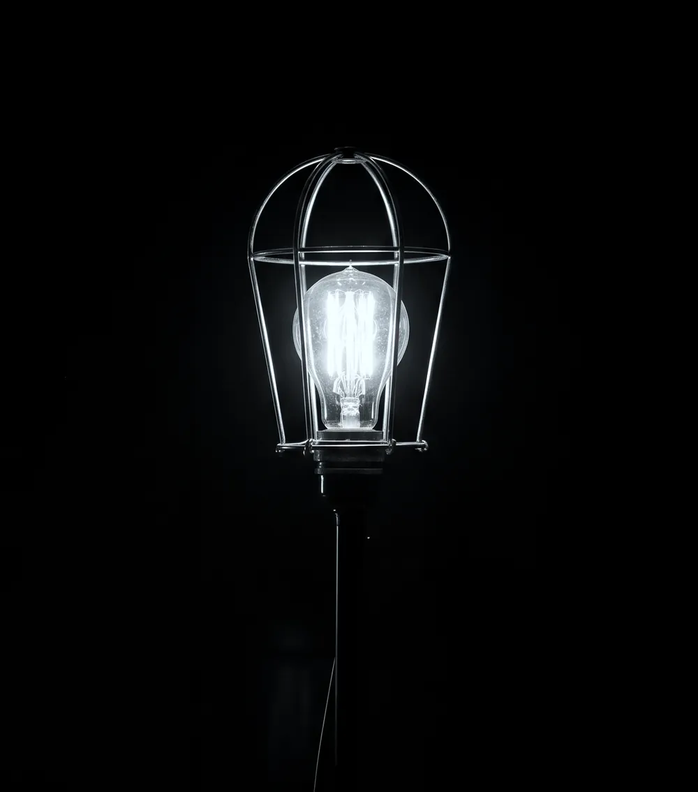

백열극장이
다시 엽니다
공사로 문을 닫은 1,159일 동안 무대에 불 하나를 켜 두었습니다. 막을 열면 그 불과 다시 여는 첫 시즌이 보입니다.
또는 막을 손으로 잡고 옆으로 끌어 보세요
다시 여는 첫 시즌
〈남겨 둔 불〉
2027년 3월 12일부터 5월 30일까지 네 편을 차례로 올립니다. 화요일부터 금요일은 저녁 7시 30분, 토요일과 일요일은 오후 3시에 시작하고 월요일은 쉽니다.
-
–
켜 둔 불
문 닫은 극장을 밤마다 지킨 관리인과 무대 위 전구 하나의 이야기입니다. 1,159일을 아흔 분에 담았습니다. 재개관 첫 공연입니다.
-
–
물 새는 집
천장에서 물이 새는 오래된 집에서 양동이 셋을 옮겨 가며 겨울을 나는 세 식구의 희극입니다.
-
–
막간
새 작가 다섯 명이 쓴 단막을 하루 한 편씩, 배우들이 대본을 들고 읽습니다. 낭독이 끝나면 작가와 이야기를 나눕니다.
-
–
빈 무대
의자 하나, 전구 하나, 무용수 둘. 대사 없이 몸으로만 하는 70분입니다.

1,159일 동안
켜 둔 불
극장에는 오래된 관습이 있습니다. 모두 돌아간 밤에도 무대 한가운데 전구 하나를 켜 둡니다. 어두운 무대에서 아무도 다치지 않도록, 그리고 이 극장이 비어 있지 않다는 표시로요.
2024년 1월 8일, 지하 객석에 물이 새고 건물 보강 공사가 시작되면서 백열극장은 문을 닫았습니다. 공사가 이어진 1,159일 동안에도 이 불은 끄지 않았습니다. 그사이 전구를 세 번 갈았습니다.
3월 12일 첫 공연이 끝나면 이 전구는 로비로 옮겨 걸어 둡니다.
예매
2027년 2월 15일 월요일 오후 2시에 네 편을 한꺼번에 엽니다. 전석 지정석입니다.
- 일반
- 35,000원
- 만 24세 이하, 대학생
- 20,000원
- 〈막간〉 낭독
- 15,000원
- 3월 12일 첫 공연
- 문을 닫은 동안 극장을 후원해 주신 분들을 먼저 모십니다. 일반 예매는 3월 13일 공연부터입니다.
가상 극장이라 이 페이지에서는 예매를 받지 않습니다.
오시는 길
빈터시 쪽문길 17, 지하 1층
가상 서비스입니다. 실제 주소가 아닙니다.
- 객석
- 98석, 휠체어석 4석
- 입장
- 공연 30분 전부터 들어오실 수 있습니다. 매표소는 공연 1시간 전에 엽니다.
- 새로 생긴 것
- 지하 객석까지 내려가는 엘리베이터, 앞뒤 간격을 15cm 넓힌 객석, 새로 깐 무대 바닥.